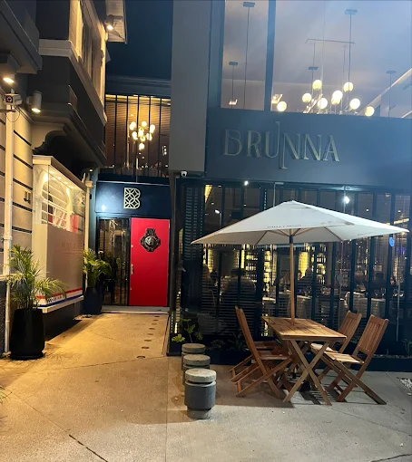
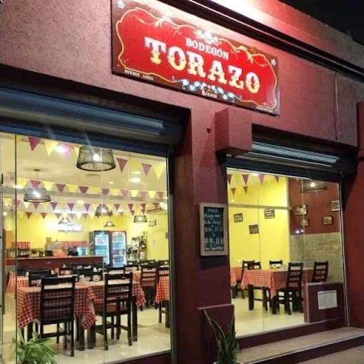

Gastronomía
Top 5 de los mejores restaurantes de Quilmes

Restaurante Comer Quilmes
Aristóbulo del Valle 1490, Quilmes
El Restaurante Comer Quilmes (conocido popularmente como "Buen Comer") es un histórico tenedor libre - self service ubicado en la zona sur del Gran Buenos Aires. Se destaca por su enorme variedad de platos y por ofrecer opciones de buffet libre que incluyen parrilla, pastas, sushi y mariscos.
Bodegón Quilmes
Este popular restaurante abrió en la sede del Quilmes Atlético Club, comandado por el conocido Chef Mono Cicero. Se ubica en Guido y General Paz. De lunes a viernes al mediodía ofrece un famoso "Platazo del Día" super económico que incluye bebida. Por las noches y fines de semana funciona con un amplio menú a la carta donde destacan el cochinillo, rabas y carnes al horno Josper.
Lo del Viejo
Es un popular bodegón de barrio ubicado en la localidad de Quilmes, en el sur del Gran Buenos Aires. Este restaurante es ampliamente reconocido en la zona por ofrecer platos caseros, abundantes y de tamaño gigante orientados a compartir..

Brunna Ristorante
Av. Rivadavia 430, B1878 Quilmes
Es un destacado restaurante de cocina italiana y de autor ubicado en la zona sur del Gran Buenos Aires. Su propuesta gastronómica combina platos tradicionales con toques modernos en un ambiente sofisticado, ideal tanto para salidas románticas como para reuniones de negocios o celebraciones especiales..

Bodegón Torazo
Es un reconocido restaurante de cocina tradicional argentina ubicado en la localidad de Quilmes, Provincia de Buenos Aires. Este establecimiento destaca por ofrecer porciones sumamente abundantes, sabores auténticos de estilo casero y una cálida atención brindada de forma directa por sus propios dueños.